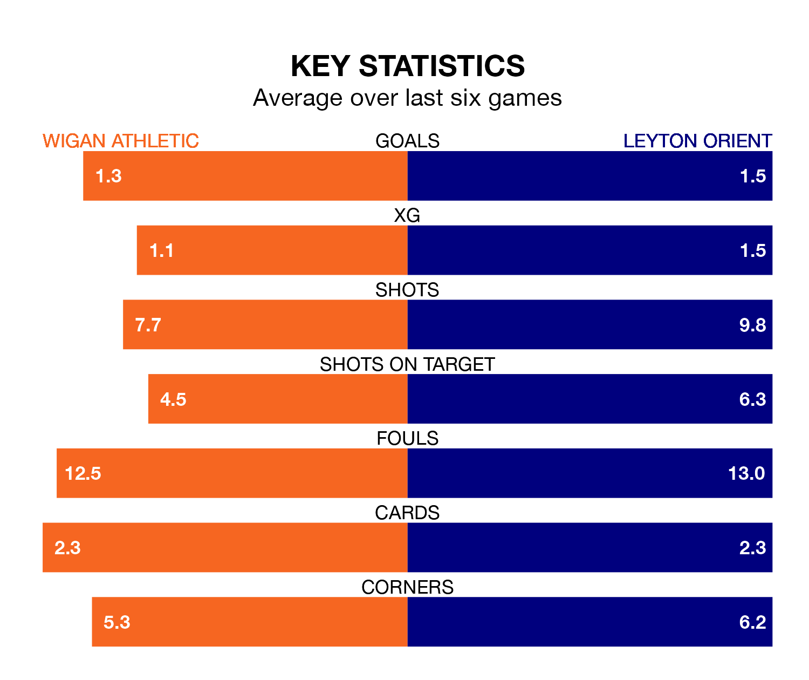

Leyton Orient travel to Wigan Athletic on Saturday in EFL League One.
The visitors come into the game on the back of a defeat in their last match, having lost to Bristol Rovers 1-0 at home.
The Latics also lost their last match, 4-2 against Fleetwood Town, with their goals scored by Stephen Humphrys and Thelo Aasgaard.
With 51 goals in 36 games so far this season, Wigan are scoring more than average in the league with 1.4 goals per game. And they are conceding at an average rate, letting in 47 goals at a rate of 1.3 per game.
Orient, meanwhile, are below average scorers, with 1.2 goals per game, compared to a league average of 1.3. They have also conceded 1.2 goals per game.
The away side are ninth in the table after 36 games, of which they have won 15 and drawn nine, earning 54 points.
Athletic are two places behind Orient in 11th, with 15 wins and seven draws putting them on 52 points.
The Latics are in mixed form in EFL League One, with two wins and a draw from their last six games.
With three wins and three losses over that period, Orient's form is slightly better – they have taken nine points from 18, compared to the hosts' seven.
Saturday's match will be refereed by Scott Oldham, who has taken charge of 11 EFL League One games so far this season, issuing three red cards and booking 26 players. He has awarded one penalty.
The last Wigan game Oldham refereed was a 2-1 away win against Derby County on August 5. He is yet to oversee a match featuring Orient this season.
Updated: 09:34 (UTC), 08/03/24